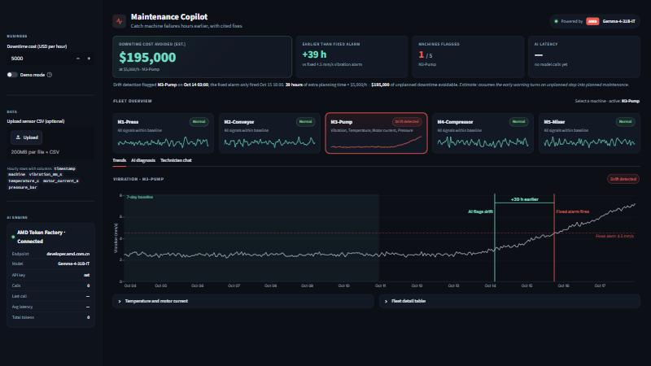
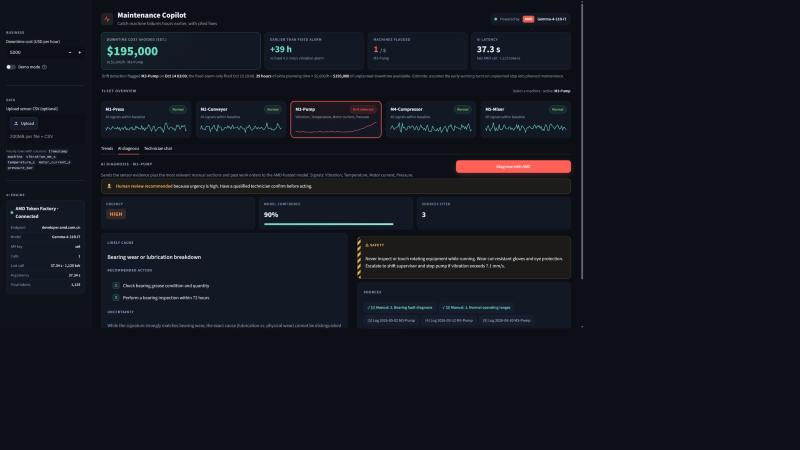
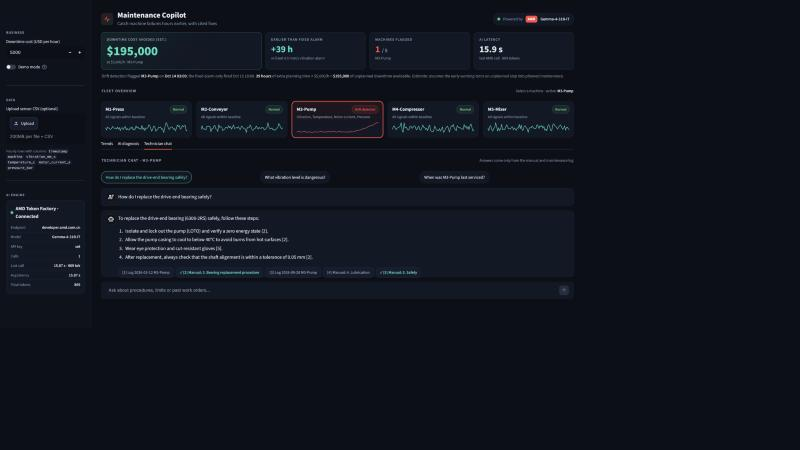

Sensors stream all day, yet failures still arrive as surprises.
Fixed thresholds trip when the machine is already close to failure.
Technicians dig through PDF manuals and old work orders by hand.
Unplanned stops cost thousands of dollars every hour.
Each machine is compared to its own baseline, not a fixed limit.
Cause, confidence, urgency, action and safety note, with cited sources.
Ask questions answered only from the manual and maintenance log.
Raised when the model is unsure or urgency is high.

1 · Detect. M3-Pump flagged red. The AI flags drift 39 h before the fixed 4.5 mm/s alarm fires.

2 · Diagnose. One click: cited cause, urgency, confidence and a safety callout.

3 · Ask. “How do I replace the drive-end bearing safely?” with source chips.
Gemma-4-31B-IT through an OpenAI-compatible API, returning structured JSON.
Endpoint, model, latency per call and tokens used, shown in the app.
vs. a fixed 4.5 mm/s vibration alarm (demo data)
≈ $195,000 at $5,000/h, configurable in the app
cited, safety-aware actions instead of manual search
MQTT / OPC-UA
Defect photos, on AMD
Create tickets directly
Real production data